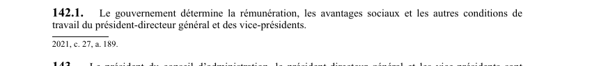

art-142.1-LSST : conditions travail PDG vice-présidents
Un article du wiki ⚖️ Recueil législatif
🌐 LegisQuébec · 📄 PDF officiel (page 40)
Texte officiel : capture du PDF

Toucher l'image pour l'agrandir🔗 Ouvrir a cette page : LSST.pdf : page 40 · texte a jour au 26 mars 2024
En bref
Le gouvernement détermine la rémunération, les avantages sociaux et les autres conditions de travail du président-directeur général et des vice-présidents. Cette obligation vise le gouvernement.
Voir aussi
- art. 141.1 : nomination du président-directeur général · faculté : le gouvernement nomme un président-directeur général, responsable de la direction et de la gestion de la Commission ; les fonctions de président-directeur général et de président du conseil d'administration ne peuvent être cumulées.
- art. 142 : nomination des vice-présidents · le gouvernement nomme des vice-présidents ; l'un est chargé exclusivement des questions relatives à la Loi sur l'équité salariale, un autre des questions relatives à la Loi sur les normes du travail.
- art. 143 : durée du mandat des dirigeants · le président du conseil d'administration, le président-directeur général et les vice-présidents sont nommés pour au plus cinq ans ; les mandats sont renouvelables.
- art. 144 : durée mandat membres conseil · interdiction : les membres du conseil d'administration, autres que le président du CA et le PDG, sont nommés pour au plus trois ans ; leur mandat ne peut être renouvelé que trois fois, consécutivement ou non.
- ↑ Loi : LSST
Pages qui pointent ici (4)
- art-141.1-LSST : nomination du président-directeur général Recueil législatif
- art-142-LSST : nomination des vice-présidents Recueil législatif
- art-143-LSST : durée du mandat des dirigeants Recueil législatif
- art-144-LSST : durée mandat membres conseil Recueil législatif